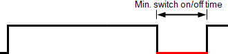
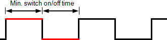
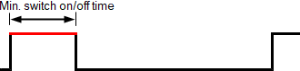

BO PWM 带脉冲宽度调制：可变周期
以下部分显示信号类型“BO PWM”和子系统特定扩展“脉冲宽度调制：可变周期”的模拟输出 (AO) 的属性。 Desigo 5.x 不支持具有子系统特定扩展“脉冲宽度调制：可变周期”的模拟输出。
Channel configuration properties
列出的属性显示在Hardware and network editor > Inspector window > Properties当在中选择数据点时选项卡Device view选项卡。
信号类型 |
|---|
“信号类型”定义 DRA 信号类型。可用信号类型取决于 I/O 模块类型。可以编辑信号类型。 |
单元 |
|---|
“单位”定义输入或输出的物理单位。 |
另存为
|
|---|
“另存为”将 I/O 数据点的设置参数保存为 xml 文件。 |

Subsystem-specific extension properties
列出的属性显示在BACnet objects editor > Inspector window > Properties > Configuration在编辑器表中选择数据点时选项卡。
✳ 表示西门子专有财产。
Maximum pulse rate |
|
|
|---|---|---|
"Maximum pulse rate" 定义过程值 100% 的脉冲率。 示例：最大脉率 80%: 50%: 33%: | ||
财产ID：4982 | ||
Minimum pulse rate |
|
|
|---|---|---|
"Minimum pulse rate" 定义过程值 0% 的脉冲频率。 示例：最小脉率 10%: 5%: 分钟。固定开启时间：1秒 | ||
财产ID：4983 | ||
Minimum switch on/off time |
|
|
|---|---|---|
"Minimum switch on/off time“定义了脉冲的持续时间（开或关）。热执行器的叠加周期的长度是从该时间和过程值（以%表示）得出的。 各种过程值的示例： 75%:  50%:  25%:  | ||
财产ID：4960 | ||
Output position |
|
| |
|---|---|---|---|
"Output position" 定义所连接的物理输出是否被处理为 NO（常开）或 NC（常闭）。 | |||
NO contact | 连接的物理输出被处理为 NO。 | ||
NC contact | 连接的物理输出被处理为 NC。 | ||
财产ID：4970 | |||